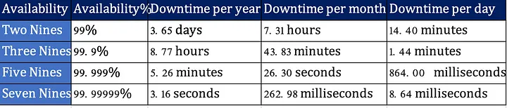
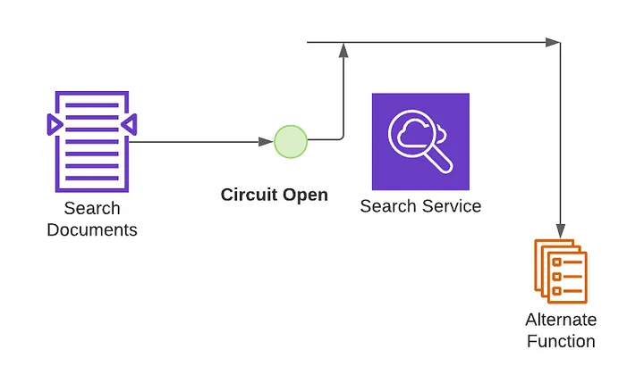
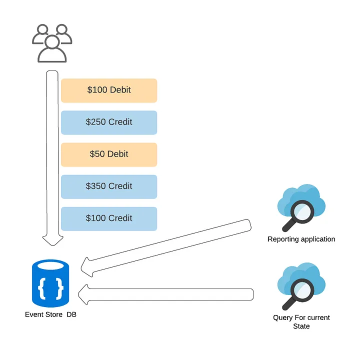
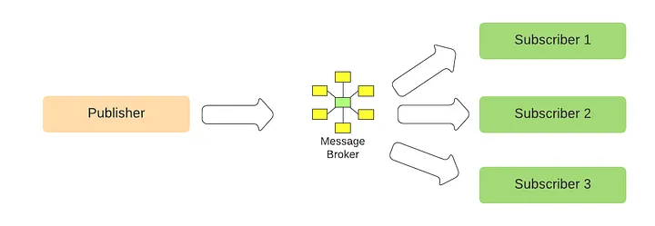
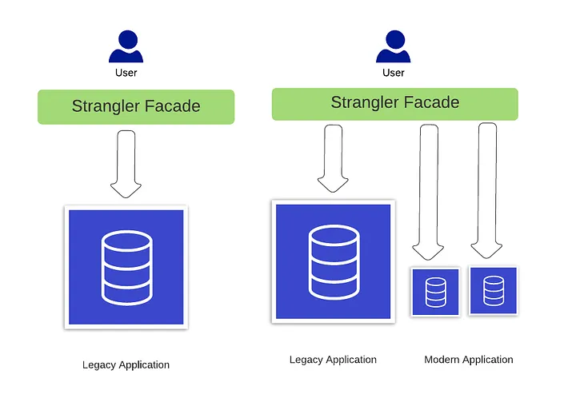
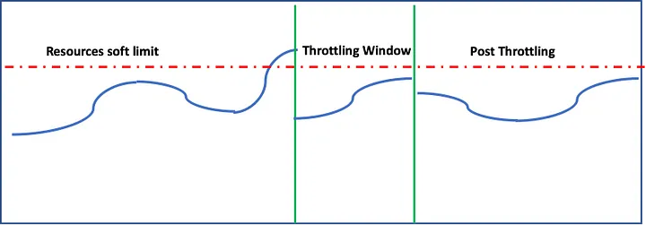

10 Design Patterns every Software Architect and Software Engineer must know
Any business exists to solve a real human problem. It could be to increase speed, reduce cost, improve convenience, add pleasure to life or make the knowledge available at the fingertips. Technology often used to solve these business problems. But then why the design patterns are important? Typical challenges with IT system are Availability, Scalability, Resiliency, Data Management, Performance and Security. Before going into design patterns it is important to get clarity of these words.
Availability: Availability is the percentage of time system is up in a defined timeframe. A system can be down because of multiple reasons like software errors, network issues, load issues, DDos (Distributed Denial of Service) attacks and infrastructure hardware issues. Availability is measured as a percentage as below.

Scalability: In 2014, Flipkart - an Indian online retailer went on to apologise to customers as big billion sale could not cope up with customer demands because of scalability issues. Scalability is a factor of computing resources, data storage needs, messaging infrastructure and cost. There are two ways to sort out scalability issues. The first one is vertical scaling where you would keep on increasing the capacity of the resources the second one is horizontal scalability where you add more nodes. There are pros and cons with either of these approaches. Typically, vertical scaling is faster, but has limitation beyond a certain point of time and horizontal scaling takes more time and offers close to infinity scaling.
Scalability is how the system resources can cope up with unpredictable customer demands.
Resiliency: You went on to buy a watch on an e-commerce site. You did not like the design and you want to look for more options. You selected few dropdown boxes with design, color, price filters and clicked on search button. Now you would expect to see picture of the watch, price data, some specifications like Band Material Type, Watch Movement, Colour, Delivery Date. What if delivery date microservice was down that time? As an architect, you have multiple options now. Do not show that field at all, show a static message that “We are calculating the accurate delivery date, please be patient”, or you pick up a date range and show to the customer.
Resiliency is the ability of a system to gracefully handle the failures and recover from failures as soon as it can.
Data Management: Data management plays a crucial role in scalability, availability, security and resiliency. Architectural decisions related to data management depends on what type of application you are building. Is it write heavy (more user transactions), read-heavy (reports), meant to do analytics (forecasting, customer segmentation), time series (log processing) or Datawarehouse (data analytics). Few other factors that would influence are data consistency, data availability, data storage and archival strategy.
Performance: Scalability and performance are interrelated. If there are more users compared to what the system can handle, it is natural that the system would encounter performance issues. How to deal with this? Either you increase the resources or reduce the number of users. Of course, the second choice is not ideal because you would end up losing the business. In fact, we will sort out these performance issues when you sort out scalability issues. I just want to remind you, scalability can’t solve all the performance issues but can solve some issues. For example, if the performance issues are the result of badly written DB query, scaling the resources without fine-tuning the query will prove to be a disastrous decision.
Security: Building secure systems gives an assurance to users that their data is in safe hands. Data integrity and data durability are equally important. It is very similar to when you put your money in the bank. If you deposited one million dollars in the bank, you do not want to lose that money (Safe), you would want the bank to always say you deposited one million -no mistakes here (Integrity) and even after 10 years you go to the bank, you will still have that one million dollars money (Durability).
As you now got the basics right, let's look at important patterns one by one. No design pattern is a magic pill for all the issues. One needs to choose depending on the use case.
Scalability and Performance
- CQRS: Command Query Responsibility Segregation is first introduced by Greg Young. As the name suggests it is about segregating the write and read responsibilities. Write and read can happen from a single database or multiple databases. But the data model is different. CQRS easily fits into event sourcing architecture. Consume the events as and when they occur and write into “Write DB”. For display or reporting purposes read from the “Read DB”. To make this even more exciting, you may use normalized RDBMS for write and denormalized NoSQL DB for “Read”. Commands are typically queued for asynchronous process and a query can never modify a DB. One very good benefit is you can independently scale the DBs

CQRS — Command Query Responsibility Segregation
Data Management, Security
2. Anti Corruption Layer pattern: This pattern was initially described by Eric Evans in Domain-Driven Design (DDD). Let me introduce this with a story. Martin and Sheela work in a retail chain. Martin works in the customer order team and Sheela works in Loyalty Card team. From the DDD perspective, Martin and Sheela belong to two different domains and typically they do not interact with each other. One day Sheela wanted to make a change in her system. The change is to know the location of the customer so that she can offer additional loyalty points based on the location. However, she doesn't know Martin. Even if she knows, Martin may not agree to her change as he has to change his API. However, she knows that Srinivas is Martin’s manager. She approaches Srinivas to make the change. In this case, Srinivas is an Anti-Corruption Layer. This pattern is typically used when you have legacy systems and modern applications and you are in the journey to migrate. This layer contains all the logic that is required to translate the requests from modern systems. The biggest challenge in introducing this layer is, it will add one more hop for the user and adds to latency. A decision must be taken between speed vs. data.

Anti Corruption Layer
Resiliency, Fault Tolerance
3. Circuit Breaker Pattern: When you travel in flight, there is an oxygen mask and a life west, which is rarely paid attention to other than the air hostess who demonstrates passionately. The reason is very evident. These are used only when there is a failure. Your basic assumption is your flight will not fail, it is not required for you to use and so you will not pay attention. But this is not true for IT systems.
“Everything fails all the time” — Werner Vogels, AWS CTO
I am sure you heard about many famous websites being down because of various reasons. In a distributed environment anything can fail at any time.
As an architect, you can’t prevent failures. You can only design to handle the failures.
Circuit breaker pattern prevents an application from performing an operation that is almost certain to fail. Let me explain this. Your system is suddenly experiencing load and there are more API requests than it can handle. For instance, service typical response time threshold is 5 second and now requests are taking more than that and your service starts sending 500 responses back. Keeping aside the bad experience to the user, your system might completely give up if there is more load beyond a certain point. Now it is time to stop more requests.
Let's compare this with how an electrical circuit breaker works. Did you ever encounter this? You just switched on a plug and your electricity is suddenly gone. Now you may need to go to your switchboard either in the basement or in your main hall and ON the switch that went off. This is where the circuit breaker is in action in the real world. What is this doing? As the load is high, the electricity was stopped to prevent further damage.
Lets now come back to our world. The circuit breaker pattern has three states. Closed, Open and Half Opened. In the closed state, everything is normal and your system works as it is intended. When there is an issue, the circuit breaker opens and data flow cuts off. This means that intended requested are not served to users. Half Open tries to test the waters after some wait time, to see if the problem still exists. If it is successful, state gets changed to closed so that system comes back to normal. If it is not successful, it will go back to open state.

Circuit Breaker — Closed State

Circuit Breaker — Open State
Scalability, Resiliency and Performance
4. Event Sourcing: This pattern became popular in recent days as data became new oil. This pattern suggests that, do not just store the state of an action but an entire history. Let’s say you are building a banking application. A customer will have multiple debits and credits in a period of time. Let's say the customer starts with $1000. On Day 1, she credits $50, on Day 2, she debits $100, on Day 3 she credits $150. At the end of day3, she will have $1100. However, in the case of Event Sourcing, you store all the transactions without losing a single action. When you have this data you can use for multiple purposes. While you can definitely tell what is her bank balance at any point of time by doing a quick calculation on the fly, you can also understand her banking patterns which otherwise not possible.

Event Sourcing
Let's look at one more example. You are building a movie ticket booking system. For a popular movie, you will see a lot of rush from the audience, which will cause scalability issues. Customer may book, cancel or hold the seats. Let's say the theatre has 200 seats. You need to constantly calculate available seats to make the number visible to the next customer. This is where event sourcing will be handy. Instead of calculating the available seats as a CRUD operation, you will go through all the events and finally arrive to a number.
Scalability, Resiliency, Fault Tolerance and Performance
5. Publisher-Subscriber pattern
This is popularly called as Pub/Sub pattern. In a cloud based system, modules of one system need to communicate with modules of same or another system asynchronously. Let me give an example. You are building a leave management system. Whenever an employee applies for a leave, you need to inform, Timesheet module, Scheduling module and Payroll module at the same time. This can be done with an async call. These modules just consume data. They will not validate the data. However, when an employee applies for leave, balance verification must be a sync call (typically a REST Api call), as an employee must not apply for leave when there are no balances (well, goes with HR policies of the organization)
One more example here. Imagine that you are a news sourcing company and you gather the news from various input mechanisms. Your end-users are newspapers and publishing companies. Then you capture the news on the ground and publish to your customers. If your customer is a sports magazine, they will only consume sports-related news or if your customer is a finance website, they will only use finance related to data. Your responsibility is to capture what is happening in the world without losing a single event. It is up to the customers to decide what they want to consume. You can also create materialized views for further consumption.

Pub Sub Pattern
Message brokers as mentioned in the picture best used for asynchronous communication. Whenever there is a need for resilient and fault-tolerant applications, Pub-Sub pattern comes handy. There are plenty of options for Message broker, Apache Kafka, Apache Active MQ, AWS Kinesis, IBM MQ. Apache Kafka is most popular, known for high performance and zero loss of data.
Scalability, Data Management and Performance
6. Sharding Pattern: If you invest in stock market, it is a well-proven strategy that you will not put all your money in one single stock. You will create a portfolio of stocks and invest. With this approach, if one stock price goes down you still will have other stocks making some profits.
Don't put all your eggs in a single basket.
Sharding takes a similar approach. In this pattern, you will divide data into multiple partitions or shards. This massively improves the scalability. This pattern comes under horizontal scalability, not vertical scalability. What will happen if the data is stored in a single data store? Same as single stock in the above example. If the datastore goes down, your users will not be able to access the data causing lot of pain. Beyond a certain point, you will encounter storage issues, computing power, network and bandwidth issues. If you are servicing users in different locations, having one data store will add to latency issues.

Sharding improves the scalability, performance and fault tolerance. There are multiple ways to come up with sharding strategy. The strategy goes with your use case.
Range-based Sharding: Suppose if you are storing customer data, you may look at storing based in pin code or zip code range. The disadvantage with this model is your customer data may not be equally distributed
Vertical Sharding: If you are building an e-commerce application, you might store customer demographic details in one shard and customer buying transactions in another shard. This gives an opportunity for you to scale as you needed.
Hash-based Sharding: This is a widely used strategy. If you have 5 shards to store customer data. You take for example customer unique id and apply modulo 5.
Some fun maths for you now.
How to calculate Modulo 5 of any number. It is simple. Let’s say the number is 23. Divide this number by 5. You will get 4.6. Now take 4 and multiply by 5. You get 20. Now do 23–20, you will get 3. Thus, the answer to “What is 23 mod 5?” is 3.
Hash-based sharding will have challenges in long run. What if you would like to add one more shard after an year. You need to change the sharding logic and the capacity in the data store goes for a toss. The solution is consistent hashing.
Data Management
7. Strangler Pattern: Wikipedia meaning of Strangler is an epiphyte whose aerial roots eventually strangle the tree on which it grows. Today pretty much every organization is moving from monolithic to micros services. This journey is not going to be easy in any means. When you migrate to a new system from a legacy system, you systematically move the functionality to the new system instead of a big bang approach. If you are migrating a legacy monolithic application to cloud microservices application, this pattern comes handy. Eventually, when the migration is over, the user directly interacts with modern applications. In this pattern, the small functionalities (or micro services) that are built and getting migrated, eventually kills the main system. Find more details on this pattern from Martin Fowler’s blog.

Strangler Pattern
Data Management, Security
8. Saga Pattern: This is the best pattern to manage data consistency in a distributed system. Before the internet and WhatsApp, people used to travel to relatives and friends home personally and give marriage invitations. This is seen as inviting with respect. Anyways, keeping this aside, what if the marriage cancels by any chance? You do not want your relatives and friends to come on that day. The best way is you again travel to each person’s place and tell them that marriage got cancelled. (Not a positive example. But that's life). This is exactly Saga pattern. The first paper on Saga pattern was published in 1987.
There are two ways to implement sagas pattern. Event/Choreography design and Command/Orchestration Sequencing Logic. Choreography design is very complicated. Lets look at Command/Orchestration Sequencing Logic. I will now take the example of flight booking application. This is the sequence when you book a flight.
- Select a seat (Seat Service)
- Select Meal (Meal Service)
- Pay for booking (Payment Service)
- Available seats now get updated to deduct one seat (Booking Service)

Saga Orchestrator
Let's look at the sequence of events:
- Booking Service saves a available seat for user and asks Booking Saga Orchestrator (BSO) to start a Book seat transaction.
- BSO sends a “Do Payment” command to Payment Service, and it replies with a Payment Succesful message
- BSO sends a Confirm a seat command to Seat Service, and it replies with a Seat Confirmed message
- BSO sends a Book a meal command to Meal Service, and it replies with a Meal Confirmed message.
Let's say payment service fails. You do not want to offer a free seat and a free meal for your customer. Now BSO sends a command to roll back the seat booking and meal booking. A very good and detailed explanation of Saga Pattern can be found here
Availablity, Resiliency
9. Throttling Pattern: If you ever visited any famous Indian temples on a good day, there will be 50K to 100K devotees. The Darshan time (time in front of God) lasts for just few seconds but they spend in the queue anywhere between 4 to 8 hours. Temple administration usually controls the crowd by putting them in small compartments with some seating facility. Lets says there are 20 compartments and one final queue before “darshan”. Around 200 people will fit in one compartment. As the time progresses, people move from compartment 1 to compartment 2 and so on until they hit the final queue. This is called Throttling.
When it comes to IT applications, most of the times load is predictable until unless there are some black swan events. E-commerce site gets more load during festive season or when there is a sale. For a banking system there may be more load during the time when the salary is getting credited. For a time capturing system, there will be peak load during morning, afternoon and evening time. One option to handle these peak loads is to auto scale the resources. Second option is to put a limit on the number of transaction that the system can process and start throttling the remaining transactions. With this, the SLAs are met and system continues to function as it is intended.

Throttling
Availablity, Performance
10. Static content hosting pattern: On a typical website, the content that doesn't change is called static content. It is generally created using HTML, CSS and Javascript. Javascript is not mandatory, can also be done with just HTML and CSS(or Sass). The dynamic website will have a logic to run on the web server and usually does CRUD operations on data which is not possible to be served by the static website. Dynamic websites depend on server-side processing, including server-side scripts such as PHP, JSP, or ASP.NET or Node.js. For example, you would like to know the price of a product before buying, you would like to pay your electricity bill, you want to post happy birthday on your friend’s timeline, or even complicated, you would like to implement your options strategy of a stock. All these require a dynamic website. With the emergence of AWS, Azure and Google cloud platform static hosting doesn’t need your own server to run. For example, you can host your static website on Amazon S3 (Simple Storage Service) without a need to spin off a new server. in addition, you can speed up your site by using Cloudfront which will store the files at the edge location close to users.